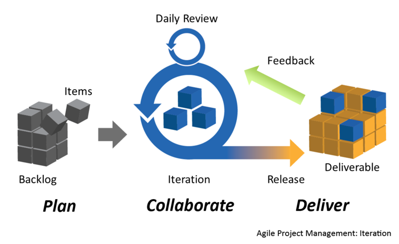
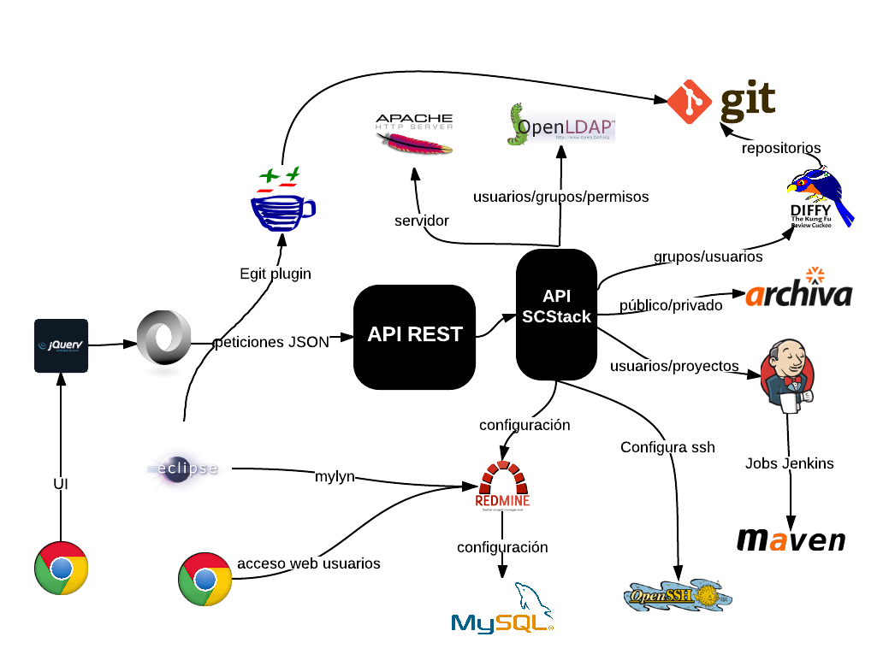

Hola, mi nombre es
Ricardo García Fernández / @ricardogarfe
PDIITSCStack
Proceso de Desarrollo Iterativo e Incremental a través de SidelabCode Stack
Tutores:
Patxi Gortázar Bellas
Micael Gallego Carrillo
This work by Ricardo Gracía Fernández - ricardogarfe [at] gmail [dot] com is licensed under a Creative Commons Attribution 3.0 Unported License.

Que, porqué y para qué
¿ Que es sideladCodeStack ?
¿ Por qué aparece ?
¿ Para que sirve ?
Objetivos

Crear software de calidad a través del uso de las herramientas enfocado a través de un proceso de desarrollo
Consciencia y constancia
“El progreso, lejos de consistir en el cambio, depende de la capacidad de retención. Cuando el cambio es absoluto no queda ningún ser para mejorar y ninguna dirección se ajusta para una posible mejora: y cuando la experiencia no se conserva, como entre los salvajes, la infancia es perpetua. Aquellos que no pueden recordar el pasado están condenados a repetirlo.“
Metodologías y Procesos
Dejarnos guiar por las metodologías existentes ayudados por los proceso para poder adaptarlos a nuestras necesidades.
Sencillez
Algo sencillo para el usuario es el doble de efectivo.
- gráficas de barras
- compra con un click
- etc...
Objetivo tangible
“Done is better than perfect“
Requisitos
Metodologías Ágiles
Aportan flexibilidad al desarrollo y capacidad de cambio.
Iterativa e Incremental
Proceso de Desarrollo
Actúan de Catalizadores
TDD

Continuous Integration

Continuous Delivery & Deployment

Herramientas
“poner nombre a las cosas“
- Gestión de usuarios, permisos y roles
- OpenLDAP
- ITS - Gestor de tareas
- Redmine
- Repositorio de código
- Git
- Revisión de código
- Gerrit
- Gestión de librerías
- Archiva
- Gestión de la integración y despliegues
- Jenkins
¿ Se puede unificar ?

Un nuevo compañero
Las herramientas ALM
Application Lifecycle Management Encargada de la gestión del ciclo de vida de una aplicación

Forjas de Desarrollo
Entorno de desarrollo colaborativo de Software
“Crear un sistema modular que permita integrar estas herramientas del ciclo de vida de un proyecto como vehículo en la forja de desarrollo“
Nube de forjas

Análsis 1a iteración
Requisitos para adapatar el proceso Iterativo e Incremental:
- FLOSS
- ITS
- Repositorios privados y públicos
- Entorno en un servidor propio
- Desarrollo
- Modularizado
- Iterconexiones
Análsis 2a iteración
Requisitos para adapatar el proceso Iterativo e Incremental:
- Wiki
- FTP
- Code-review
Resultados
El análisis generó la necesidad de crear una forja de desarrollo Libre y usable en distintos entornos.
SCStack
Nueva rueda FLOSS

El conjunto de herramientas apiladas y conectadas que dan forma a la Forja.
Componentes SCStack
Arquitectura
Dividida en tres niveles:
- Administración
- API Rest
- API
Actores

Desarrollador
Si no hay desarrollador no hay proyecto...
Más vale una imagen...
¿ Quien orquesta ?

Aprovisionamiento
“Accción o efecto de aprovisionar, aprovisionar : abastecer.“
Aplicado a la Ingeniería del Software el Aprovisionamiento nos provee de los componentes necesarias para construir una solución.
Puppet
class {'apache': }
...
apache::vhost { 'www.example.com':
priority => '10',
vhost_name => '192.0.2.1',
port => '80',
docroot => '/home/www.example.com/docroot/',
logroot => '/srv/www.example.com/logroot/',
serveradmin => 'webmaster@example.com',
serveraliases => ['example.com',],
}
Vagrant
Configuración
config.vm.box = "precise64"
config.vm.network :hostonly, "192.168.33.10"
config.vm.provision :puppet, :module_path => "modules"
Arranque
$ vagrant init
¿ Hemos llegado ya ?
Donde estamos... objetivos cumplidos...
Siguientes Iteraciones
Hacia donde se dirige...